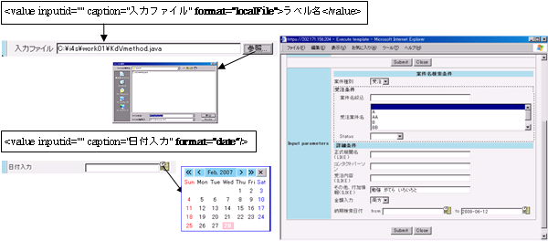

研究フロー統合管理システム 『 RCM System Software 』
主な機能
XmlViewer 機能
- XML を直感的に比較・把握出来る Viewer
-
RCM システムに格納し取り出されるデータは全て XML で記述されているため、どんな複雑な情報も完全かつフレキシブルに記述出来ます。 しかし、XML は人が直接見るには煩雑過ぎるという問題があります。XML Viewer は人が直感的に情報を把握・認識出来るように、XML を直接グラフィカルな表示に変換する機能を持っています。
簡易ＵＩ機能
- 入力画面を簡単に作成
-
ボタン、リストボックス、テキスト等の追加・変更が簡単に出来る UI (User Interface) をサポートし、変化の激しい研究業界で GUI を導入することを実現します。

WorkFlow 機能
- 柔軟性の高いシステム構築を短期間に実現
-
研究は特性上ルーチン的な作業が少なく非定常な作業が多いため自動化が難しいといわれています。
しかし、実際には可視化や実験機器操作など自動化可能な部分も多く存在しています。
WorkFlow 機能は研究フローを XML で管理することで自動化し、共通作業や反復作業から研究者を解放し、本来の創造的な研究活動に注力出来る環境を提供します。
ファイル転送、データベース登録、コマンド実行等の機能単位を組み合わせて研究フローを組むことで作業の自動化を実現し、Web 画面上から統一的にデバックすることによりサーバ群に毎回ログインして作業を行う手間を省きます。
データバックアップ機能
- 堅牢なシステムを構築
-
データのバックアップをし忘れたため、大事なデータが事故で消失したり、不注意で消えてしまった経験はございませんか？
データバックアップ機能ではデータをバックアップサーバにてバックアップしておき、検索時に主ファイルサーバ内に該当するファイルが存在しなければ、予備ファイルサーバから自動的にリストアする擬似階層ストレージを組むことが可能です。
コラボレーション機能
- 情報共有と機密管理を同時に実現
-
記録されたすべての情報に閲覧・変更権限情報を付加し、データへのアクセス権を管理します。一般公開、グループメンバ公開、非公開の公開レベルをXMLの 1 レコードレベルで制御します。
研究グループ間での情報の共有と、研究成果の保護という、相反する目的をバランスよく管理するために役立ちます。
また、蓄積した情報の共有が人材育成やノウハウの継承に役立ちます。
トレーサビリティ機能
- データの信頼性と再現性を向上
-
研究プロセス中で発生するログ、ファイルのメタデータやアノテーション、ワークフロー、データベースリクエストは全てデータベースに記録されます。
そのため、通常では検索が難しいワークフローやデータベースリクエスト名などでキーワード検索することが可能となり、わずかな記憶を頼りに過去の大量のデータを検索することが可能です。
実験の際の初期設定が思い出せない、論文に投稿したもののどのような初期設定で解析したか思い出せない場合に、通常の検索項目だけでなく、ワークフローやログから実験のデータを再現することが可能です。
XML-Picker 機能
- テキストファイルから情報抽出
-
ASCII ファイルから指定した規則に従い文字列を抽出しXML化しデータベースに登録することで、入力テキストファイルの中身もデータベースで検索することが可能になります。
また、データベース上の XML データを ASCII 文書に挿入することも可能で、メール機能と組み合わせてタイムリーなレポート作成等に利用することも可能です。